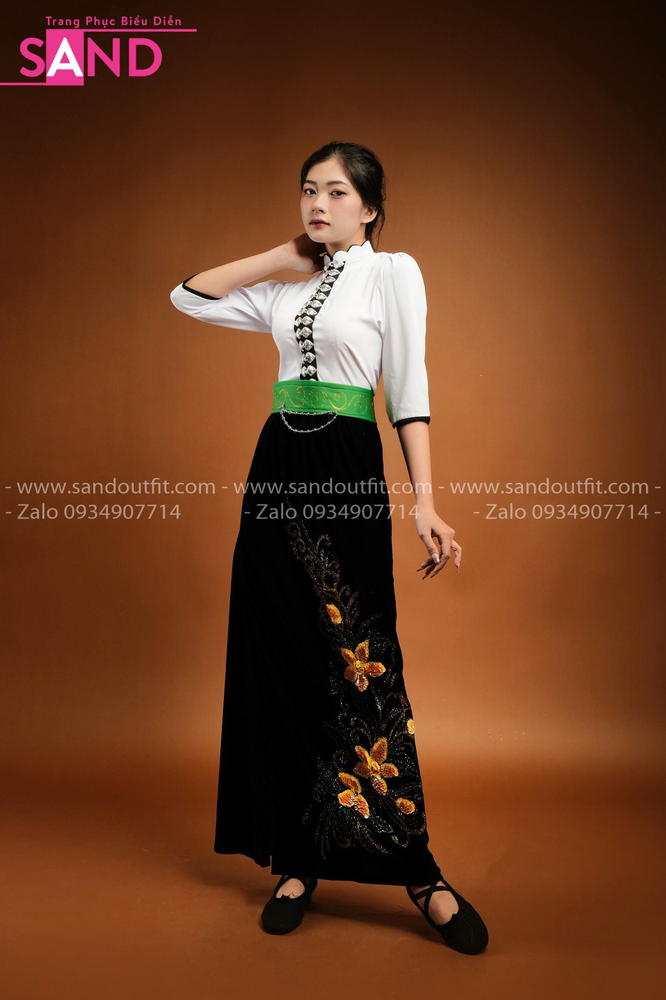
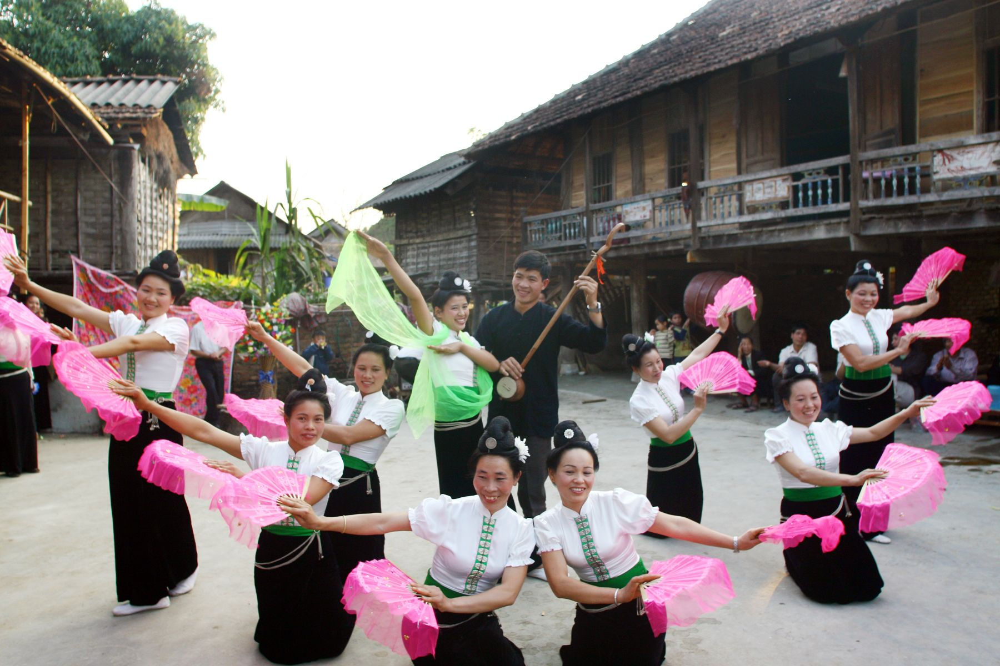
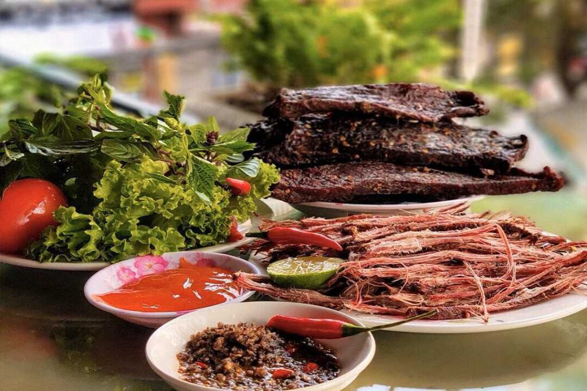
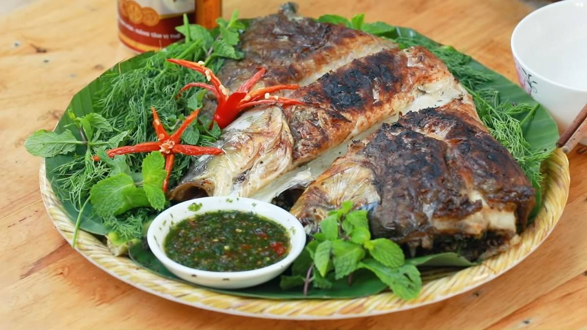

Khám phá văn hóa truyền thống của người Việt

Phụ nữ dân tộc Thái nổi tiếng với bộ trang phục áo cóm, váy đen dài, thắt lưng xanh cùng nhiều đồ trang sức bạc. Nam giới thường mặc áo chàm và quần ống rộng đơn giản.
Cầu cho bản làng bình an và mùa màng bội thu.
Tưởng nhớ công lao của những người khai lập bản mường.
Lễ hội văn hóa đặc sắc gắn liền với biểu tượng hoa ban Tây Bắc.

Múa Xòe là nét văn hóa tiêu biểu của người Thái, thể hiện tinh thần đoàn kết cộng đồng và niềm vui trong cuộc sống. Nghệ thuật Xòe Thái đã được UNESCO công nhận là Di sản văn hóa phi vật thể đại diện của nhân loại.
Người Thái sử dụng nhiều nhạc cụ như khèn bè, tính tẩu và trống trong các lễ hội và sinh hoạt cộng đồng.


 Dân tộc Thái
Dân tộc Thái